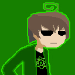

Membres de l'équipe
BSoD
* Fonction : Traducteur, patcheur/programmeur
* Description :
Un mec touche-à-tout qui aime un peu trop son ordinateur et Undertale. A tendance à casser les PC.
Greeph
* Fonction : Traducteur
* Description: Moi, je suis l'homme à tout faire dans ce projet : dès qu'il faut chercher un café c'est toujours moi. Ah, et j'aime bien faire des vidéos aussi (quality > quantity).
* Youtube : https://www.youtube.com/user/GreephStuffs
Katsuko
* Fonction : Traducteur/ice
* Description :
Procrastine beaucoup. A Napstablook comme personnage spirituel.
Kite
* Fonction : Relecteur, Correcteur, Bêta-test
* Description :
Ancien étudiant en traduction, intéressé en écriture et en dessin. +100 pts chance et DÉTERMINATION pour avoir rejoint l'équipe de traduction française d'Undertale!
Miette
* Fonction : Traductrice
* Description :
Jeune femme de 20 ans qui aime beaucoup Undertale et Pokémon. Elle aime rire pour un rien parce que sa vie est une énorme blague.
* Twitter : @Compotalypse
Ninfiali
* Fonction : Traductrice
* Description :
Future étudiante en art ayant pour but de travailler dans le jeu vidéo. A découvert Undertale par hasard et franchement, c'est génial. Sinon, ça va ?
* Tumblr : http://ninfiali.tumblr.com
Nanoplink
* Fonction : Programmeuse, Gestion du site
* Description :
>++++beep[>++++++++>+++++++++>>+++++++++>++++++++++<<+++++++++<<<-]>>>>[<<+>>>+<-]<<++.>+++.<<<+++++[>>++>+++++++>++++++++++>+++<<<<<-]>>++<<+++++boop[>>++>++++++>++++++++++>++<<<<<-]>>+.>+.>+++++++++.>.<<<<.>>>.>.<<<<.>>>+++.++.>.<<+++++.<+++.>>.>.<<<<.>>--.<---.<.>>>++.>.<.>.meow (avatar par @mantamint)
* Twitter : @nanoPlink
Poilu
* Fonction : Admin, Traducteur, Correcteur
* Description :
Etudiant en dernière année d'école d'ingénieur. Je connais trop de gens qui veulent jouer au jeu mais ne peuvent pas blairer l'anglais, d'où l'idée du projet.
* Twitter : @NGPPoilu
Rikkel
* Fonction : Admin, Traducteur, Correcteur, Création du site
* Description :
Jeune étudiant en ingénierie déterminé à faire connaître Undertale, exaspéré de voir à quel point son jeu favori est méconnu. Joueur féru de Project M.
* Twitter : @OkabeKimtaro

Tactoe / TE
* Fonction : Admin et chef de projet, Traducteur, Correcteur, Editeur de sprites, Gestion du site, Community Manager, Bêta-test
* Description :
J'ai fait un rêve où y'avait Papyrus qui me disait "TRADUIS UNDERTALE NYEHEHEH" et du coup me voilà.
Yobar
* Fonction : Relecteur, Correcteur
* Description :
Correcteur des photes dortograffe qui aime bien travailler pour ce spinoff d'Homestuck. Il aime bien gueuler dans un micro aussi, et peut-être réussira-t-il un jour à trouver le courage et les capacités de réaliser son rêve éternel d'enfant crédule de créer un jeu vidéo.
Z3phiron
* Fonction : Admin, Relecteur, Correcteur, Traducteur, Bêta-test
* Description :
Don't you have anything better to browse ?
Remerciements spéciaux :
Bêta-testeurs :
Alexandre Guion et Aruvenn (Les plus déterminés)
Alienne et Flephy (Conseillères de l'ombre)
GinoX27 et Le petit fantôme de la cave (Une vignette pour l'effort)
Tagpower et Seda'li (Grammar nazis de l'infini)
Zeilk (Une arrivée tardive mais ô combien salvatrice)
Autres :
Jumpman pour ses précieux conseils, ainsi que pour l'installateur mac (par Sappharad)AlexVixgeck et la team UT-ES pour leurs outils de traduction
Wanini pour ses illustrations
Zuggira, Mero, SpaghettiPepito, Sunnymoon, et tous ceux qui n'ont pas pu nous accompagner jusqu'au bout, mais dont les contributions nous ont aidés à nous rapprocher du but !